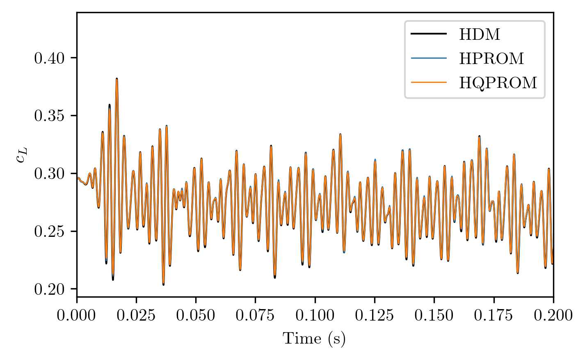

Quadratic Approximation Manifold for Mitigating Kolmogorov barrier in Nonlinear Projection-Based Model Order Reduction. It builds on data-driven approach underlying the traditional construction of projection-based reduced-order models (PROMs) The technique is becoming increasingly invaluable for many differentforms of parametric applications arising in computational structural dynamics, multiscale-modeling, computational fluid dynamics (CFD), uncertainty quantification (UQ) and optimization
 PMOR methods can be considered to be simulation-driven, or data-driven computational methods. PMOR is matured for both linear and nonlinear problems, from all theoretical, algorithmic, and application viewpoints. The state of the art is currently represented by the least squares Petrov-Galerkin (LSPG) method, developed in under the abbreviation GNAT(Gauss-Newton method with Approximated Tensors). The performance of LSPG in terms of robustness, robustness and dimensionality reduction has been most recently demonstrated in
The Kolmogorov barrier remains an outstanding issue for nonlinear PMOR, due to the common reliance of traditional PMOR on an affine subspace approximation. The state of the art of the empirical interpolation method (EIM) and its discrete counterpart (DEIM) has been advanced. For convection-dominated PDEs, dn(M) decays as an exponential function of n, which allows achieving a minuscule projection error for even a modest size of n. The n-width issue outlined above is independent of any parametric set-forming, but it can be significantly exacerbated in the presence of a high
The remainder of this paper is organized as follows: section 2 provides a brief overview of nonlinear PMOR, incorporating a succint discussion of Galerkin and Petrov-Galerkin projections, and the Kolmogorov barrier. Section 3 introduces the idea of substituting the traditional affine subspace approximation with a higher-order polynomial approximation of degree p, then fully develops the case p = 2. Section 4 delineates the impact of the proposed quadratic approximation manifold on various aspects of LSPG and ECSW.
The framework for the framework is adopted for the reasons outlined in Section 1. The time-discretization of the first of the above equations by a preferred implicit scheme leads at each time-step m + 1 to a nonlinear system of algebraic equations of the form of r (Vq(t) + uref) = m+1 (or m) The N-dimensional system (5) is overdetermined as it governs n (N) N unknowns – namely, the generalized coordinates of the subspace (3) stored in qm+1.
In this case, at each time-step m + 1 and Gauss-Newton iteration ℓ + 1, the left ROB is constructed as Wm+1,ℓ+1 = Jm +1,Vqm + 1. The left ROB can be constructed as a V (7) “V
Hyperreduction using ECSW is chosen for hyperreducing any constructed nonlinear PROM. The complexity of the solution of problem (6) scales not only with the small (dimension n) of the PROM, but also with the large dimension N of the HDM. In all cases, the discrete, non linear PROM of dimension n can be written as a discrete (dimension) PROM (6), written as “glyglygly” and ‘glyglyggly’glygly’.glyglyqm+1 = arg min (Rn)
The main idea underlying ECSW is to approximate a projected quantity such as (10) using a cubature-approach whose complexity is independent of N. This is because when the projected discrete residual is expressed for qm+1,ℓ+1 and (10), it follows that when a function of qm +1,reformallyis expressed for a function that is independentof qm+1 is a function, such as qm+.1,
The Jacobian with respect to ˜u of the discrete, nonlinear PROM (6) can be written as Jm+1/∂˜u = (6) Jm +1 is the Jacobian of the projected residual (10) ECSW trains the approximation (11) on a subset of the solution snapshots already collected in the snapshot matrix S. The training is the training is performed for the PROM and not the predictions, which are consistent with (12)
ECSW can be described as relaxing (14) and defining instead as the solution of the optimization problem. This identity is a rewriting of (10) in matrix form. Unfortunately, the minimization problem is combinatorially hard. For this reason, several alternative formulations were considered in and the following nonnegative least squares approach (15) was considered. The following non-negative least square approach is the non-negligible approach (16) and the approach (17) is a non-
The Kolmogorov n-width barrier to reducibility is a useful concept for determining the extent to which, for a given size n of the ROB, the traditional PROM approximation (3) can accurately represent the solution associated with a given HDM. For a discrete HDM of dimension greater than N = 17×106 of the convection-dominated turbulent flow around the Ahmed body, a popular benchmark CFD problem in the automotive industry, an unsteady LSPG PROM – and therefore a PROM parameterized by time only– requires a dimension n.
The data-driven, higher-order polynomial approximation manifold is a compromise between: comprehensiveness of an arbitrarily nonlinear approximation manifold such as that based on a convolutional autoencoder and potential for accuracy. The total offline cost of its quadratic instance is the computational cost associated with the construction/training of both the matrix and the matrix-based approximation approximation and the reduced mesh needed for hyperreduction – $8.8
PMOR is essentially a semi-discretization method for PDEs based on global shape functions; it can be interpreted as a Ritz approximation method. For a fixed dimension n of the target nonlinear PROM, PMOR's accuracy is far superior. The proposed higher-order polynomial approximation manifold approach is amenable to a piece-wise implementation similar to that developed in, but such an implementation is work in progress. The current work focuses on the case p = 2 – that is, the solution approximation.
Two-step construction of a quadratic approximation manifold is described. Here, a two-step approach is described for constructing the matrix H. The reference solution uref is chosen as usual and the matrix V ∈ RN×n, is constructed as in the method of SVD using however SVD for data compression – and as can be expected, a lower dimension n for the same level of accuracy. In the second step, H is determined such that for all solution snapshots collected in the second. step, the errors of the quad ratic approximation (20) are minimized.
The construction of the quadratic approximation manifold underlying (20) is data-driven. It is agnostic to the specificipient form of the nonlinear HDM and therefore applicable to the PMOR of any nonlinear HM. Each row of H can be determined by solving an independent linear least squares problem. This way, H can then be efficiently determined using furthermore embarrassingly parallel computations. This distributed approach is preferred over its counterpart outlined in (24) because it is less computationally intensive.
Block q (23) contains n2 entries, but due to symmetry, n(n − 1)/2 of these are repeated entries. This issue can be addressed by excluding duplicate entries from the construction of Q to obtain in principle a redundancy-free matrix Q. The computation of the row matrices depends on the choice of the strength of the regularization. A reasonable value of this parameter can be found using the generalized cross-validation (GCV) method, as typically done for a Tikhonov regularization.
For problems (27) to be overdetermined, the number Ns of solution snapshots collected in normalizedS ∈ RN×Ns and the dimension n of the target quadratic PROM must satisfy Ns > n(n(n + 1/2) For a given nonlinear, convection-dominated problem, one can reasonably expect a quadratically PROM of dimension n to deliver the same accuracy as that of a traditional counterpart with dimension n, if n ≥ 100. Ns is often determined by a non-adaptive parameter sampling procedure.
The solution (28) of problems (27) is vulnerable to overregularization, which may lead to a loss of some of the capacity of the Nn(n + 1)/2 control variables. The heuristic described above is not meant to be the word on how to determine the dimension n of a quadratic PROM, but to provide an initial idea for how to approach this task. The overall computational procedure proposed in this paper is summarized in Algorithm 1 below. The algorithm and required computational resources are outlined below.
Algorithm 1 Computation of the coefficient matrices of the quadratic approximation manifold (20) Compute SVD (SVD) The algorithm uses a snapshot snapshot matrix S, tolerance, correction factor and regularization parameter. The algorithm is based on the Kronecker product of a matrix V, V, H, V and V (V) and V(V) V. V is V such that V ∈ RN×n(n+1/2/2) and H is H (Rn(N) or H) H is the matrix H (H) is a matrix H, H (N) and J (J)
The computational cost of Algorithm 1 has two main components: the construction of the matrix V ∈ RN×n – which is essentially the same as that associated with a right ROB for a traditional PROM (C1) In the best case, C2 is a small fraction of C1 and therefore the total cost of the proposed approach for constructing a quadratic approximation manifold is comparable to C1. The computational complexity of the SVD of the row matrices is independent of the large dimension N of the HDM and therefore is negligible.
The quadratic approximation (20) is substituted for the traditional affine counterpart (3) in the expression of the PROM (6) of dimension n. This leads to the impact on the projection-based model order reduction method LSPG. For the sake of simplicity, the notation H is used throughout the remainder of this paper. However, all reported performance results and their discussion are for an implementation where H is represented by the N rows ¯hi, i = 1,... N, to avoid redundant calculations.
The first-order Taylor approximation of the above nonlinear projected residual around the ℓ-th iterate progressivelysolution qm+1,ℓ can be written as a nonlinear, polynomial approximation. For p = 2, the derivative (31) of LSPG has the following analytical expression:‘P’m’, ‘p’; p’� is differentiable with respect to q; p is a non-linear, quadratic approximation such as that written in (19)
Hyperreduction eliminates dependence on N from both aforementioned computational complexities which become reasonable. The construction of the left ROB of LSPG (34) associated with the quadratic PROM requires the additional storage of the matrix Hq =H.H ™™™qm+1,ℓ ⊗ I + I ≉ + RN×n.. ™: Hq=H : H ż���; N ™™: N ™, N²², NVA, NBR™™; NVA™™, AVAV™, CVA™, AVAVA
The proposed quadratic approximation manifold was implemented in the compressible flow solver, which is equipped with low-Mach preconditioning and added to its nonlinear model-reduction capabilities. It is applied to the acceleration of the simulation of the Ahmed body turbulent wake, a popular benchmark problem in the automotive industry. The Ahmed body geometry can be described as an extendedextruded rectangle, where the front (facing the free-stream velocity) is rounded to promote a separation-free-free separation. The middle is a rectangular parallelepiped to promote the generation of the wake.
A global ROB of dimension roughly equal to 600 is needed to construct a PROM or HPROM that is reasonably accurate with respect to standard aerodynamic QoIs such as the time-history of the drag coefficient All PROMs are constructed using LSPG and hyperreduced using ECSW. A traditional PROM – that is. that is, an L SPG PROM constructed using the traditional subspace-space approximation (3) – is simply referred to as a. PROM
All computations reported in this section are performed using AERO-F; and double-precision arith-metic on a Linux cluster where each node is configured with two Intel Xeon Gold 5118 processors clocked at 2.3 GHz and a total of 24 cores, and 192 GB of memory. The accuracy of each constructed HPROM or HQPROM is assessed by focusing on a given QoI and measuring the relative error of the prediction delivered.
For PMOR, Ns = 1, 251 solution snapshots are collected during the HDM-based simulation – specifically, at every other time-step of the simulation. Using these snapshots, a PROM and a QPROM are constructed as described in Section 2.1 and Section 3.2, respectively. The HDM is predictive with a relative error of 2.75% for this QoI, and therefore for the PMOR it is predictive.
ECSW is configured with the parallel variant of the NNLS algorithm of Lawson and Hanson described in to solve the convex optimization problem. Its application to the CFD mesh described in Section 5.1 produces for each ROB underlying the construction of the PROM or QPROM the reduced mesh needed for building the HPROM or HQPROM. The statistics of both reduced meshes computed using all 240 cores are summarized in Table 1 below.
Iso-vorticity contours were colored by the local Mach number and postprocessed at t = 2 × 10−1 s by postprocessing the solutions obtained using: (a) the HDM; (b) the HPROM (n = 627) and (c) the HQPROM. The HDM was used to calculate the contours of Ahmed's turbulent wake. Ahmed's body turbulent wake was found in the wake of the Ahmed body. Ahmed had a turbulent wake in his turbulent wake, and his body was found to be in a turbulent state.
Figure 1 focuses on a spatio-temporal QoI, each of Figure 2 and Figure 3 focuses on two time-dependent QoIs: the time-histories of the lift and drag coefficients (Figure 2) and those of the xand z-components of the flow velocity at a probe located along the turbulent wake, normalized by the magnitude of the free-stream velocity v∞ (Figure 3) In both figures, the reader can observe that each of the HPROM and HQPROM delivers an excellent accuracy. This conclusion is supported by the computed relative errors reported in Table 2.
Time-histories of vx/v∞ (a) and vz/v(b) predicted using: theHDM; the HPROM; and the HQPROM. (a), (b) and (c), (c) are predicted using the HDM; (b), HDM, (hPROM) and HQ PROM; (h/v/v), (i/i/u/v) is predicted by the H/m, (j/vv/m), and (i) v/vm/m/v.m, v/z/m.m/w/vw/wv
The cost associated with the computation of the ROB V is almost identical in both cases: this is expected since the two ROBs share the same snapshot matrix and its SVD, and differ only in the singular values. This is largely due to the much faster computation by ECSW of a reduced mesh in the case of an HQPROM, as explained in Section 4.2 and Section 5.2. The results reported in this table show that:. The total offline cost, which, in addition to the costs mentioned above – as applicable – includes the.cost of constructing a.protective mesh using E.CSW and I/O as
The HPROM delivers a speed-up factor of 4 only for wall clock time, the HQPROM. Using the CPU time measure however, the two deliver speed-ups of two orders and three orders of magnitude, respectively. Consequently, the HPRom and HQPRom deliver speeds of 131 by this measure, compared to 131 by the PC time measure. The PC is a PC with a 4.5-inch screen size and a 2.2-inch processor.